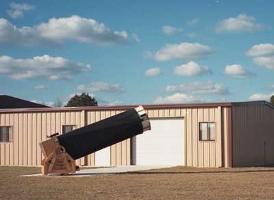

As I write this, it's raining, and the forecasts don't look too promising for observing this weekend. Perhaps the skies will have cleared by the time the March issue comes out; perhaps not. What's a poor astronomer to do when the skies are grey?
How about checking out some astronomy books? Yes, literally checking out - the local Santa Clara libraries have an excellent selection of astronomy books. I surveyed three local libraries -the main branches in Santa Clara, Cupertino, and Mountain View -and ended up with a list of interesting books way too long to list in a short newsletter article. Here's a sample.
At Santa Clara, start by heading straight to the reference section, where the maps are kept. In one of the drawers is the wonderful NASA publication SP-496, "Atlas of Galaxies, Useful for Measuring the Cosmological Distance Scale," by Allan Sandage and John Bedke. It's an oversized work, full of photos of all sorts of weird and wonderful galaxies. You can't check it out, but I guarantee you'll have a fun time leafing through it.
When you're tired of looking at galaxy pictures, head back to the regular stacks - code 520 is where the astronomy books live. Want to learn more about observing, or plan your next observing session for when the clouds roll away? How about Star Hopping, by our own Bob Garfinkle? Or Crossen and Tirion's Binocular Astronomy? Or the venerable three volumes of Burnham's Celestial Handbook?
Perhaps you're not tired of looking at pictures yet, or you want more color than the mostly-black-and-white NASA galaxy atlas. How about Dickinson and Newton, Splendor of the Universe, or David Malin's beautiful A View of the Universe, or the collection of images in Hubble Vision?
Or perhaps you're shopping for a telescope - Santa Clara has a copy of the much-praised second (recent) edition of Harrington's Star Ware.
Or you may be a planet fan. Choose from Paul Spudis' excellent Once and Future Moon, the British Astronomical Association's Guide to Observing the Moon, the wonderful NASA publication Viking Orbiter Views of Mars (the detail is unbelievable), or the National Geographic Uncovering the Secrets of the Red Planet.
But the real find in the shallow sky books here is a little gem by Carl Koppeschar called Moon Handbook, a 21st Century Travel Guide, which whimsically offers "Sightseeing highlights and recreational accomodations" for the lunar traveller. Don't forget to take the monorail to the lunar golf course while you're there!
Off to Cupertino, where we find another gem: the two-volume Celestial Objects for Common Telescopes, by the Rev. Webb. Written in '62, it's a wonderfully detailed observer's guide. Volume One, on solar system objects, is my favorite (of course): it includes a long list of interesting telescopic targets on the moon and planets, better than we see in most modern books.
It's wonderful to read Webb's accounts of mail correspondence among active visual observers trying to correlate their observations. This is accompanied by speculations on the possible nature of some of the features - did you know that some people think that the craters of the moon might be impact structures rather than volcanos, and there are even people who think (much against the grain of common wisdom, of course) that the rings of Saturn might be composed of millions of small particles all in individual orbits, instead of solid sheets? Really, it's a wonderful book, and I was so sorry to have to return it after I'd reached the renewal limit that I hunted around until I found my own copy.
Cupertino has more modern shallow sky books, too: try Cherrington's excellent Exploring the Moon Through Binoculars or Small Telescopes, the book where more than one SJAA lunar observer got their start, or another copy of Spudis, to get the theory right after you've been amused by reading Webb's 1962 account.
Perhaps you're thinking about writing some astronomical software and need some algorithms. Here you'll find Duffett-Smith's Practical Astronomy With Your Calculator, the clearest reference I've found on programming celestial mechanics. Or perhaps you want to go back to the source: how about Kepler's Conversation with Galileo's Sidereal Messenger, in which Kepler describes his reaction to reading Galileo's works?
Perhaps you want to plan an observing session. You'll find Tirion's Cambridge Star Atlas, Howard's Telescope Handbook and Star Atlas (a sentimental favorite of mine, since as a kid I checked it out over and over from the local library, mostly for the atlas pages in the back), The Photographic Atlas of the Stars by Arnold, Doherty and Moore, Garfinkle's Star Hopping, and, of course, Burnham's.
Or you can look at pictures again, in the Malin book, or Dickinson & Newton. If you didn't buy Ken Croswell's new book when he spoke at our meeting late last year, you can peruse his earlier book, Alchemy of the Heavens. Or check out some interesting home observatories in Patrick Moore's Small Astronomical Observatories.
Moving on to Mountain View, we see some of the same staples we've seen at the other libraries: Burnham's, the Cambridge Star Atlas, Howard, and an updated version of that Moore home observatory book, this time entitled Astronomical Telescopes and Observatories for Amateurs. If you didn't like Duffet-Smith's explanations of celestial algorithms, you can try Meeus' Astronomical Formulae for Calculators.
Never got around to reading Hawking's A Brief History of Time? You'll find two copies here. There's also an interesting book by Fred Schaaf called Seeing the Sky: 100 Projects, Activities and Explorations in Astronomy, which might be especially fun for parents to do with their kids (though the projects are suitable for adults as well).
Mountain View's real strength is in planetary geology. They have the Spudis moon book, but that seems to be all - until you figure out that they keep planetary books in the geology section. Head over to the 559's and you'll find the comprehensive and wonderful NASA work, Geology of the Terrestrial Planets (another book I couldn't bear to return, and eventually found a copy to buy), the same Viking Orbiter Views of Mars that Santa Clara had, and the enormous Geology of the Moon by Thomas A. Mutch, which covers the findings of the Apollo 11-16 missions in great detail. There are also several other planetary geology books to keep any would-be planetary scientist busy for a long time to come.
Oh, wait - the sky has cleared, and you're headed out to observe? No problem - the libraries will be here for a long time to come. Take your time, and enjoy! Maybe I'll see you there.
|  |